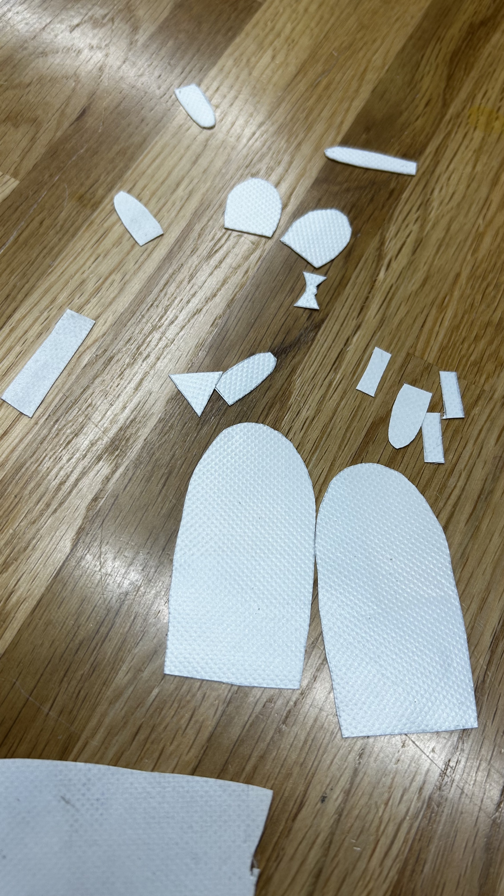
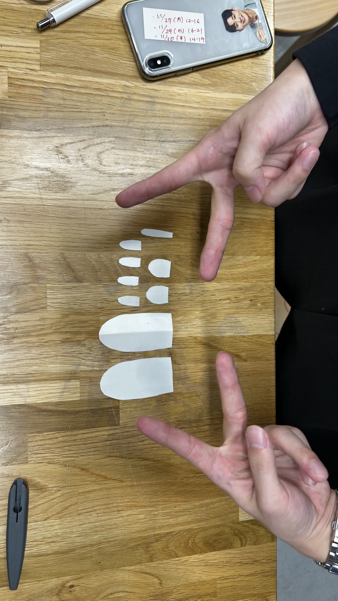
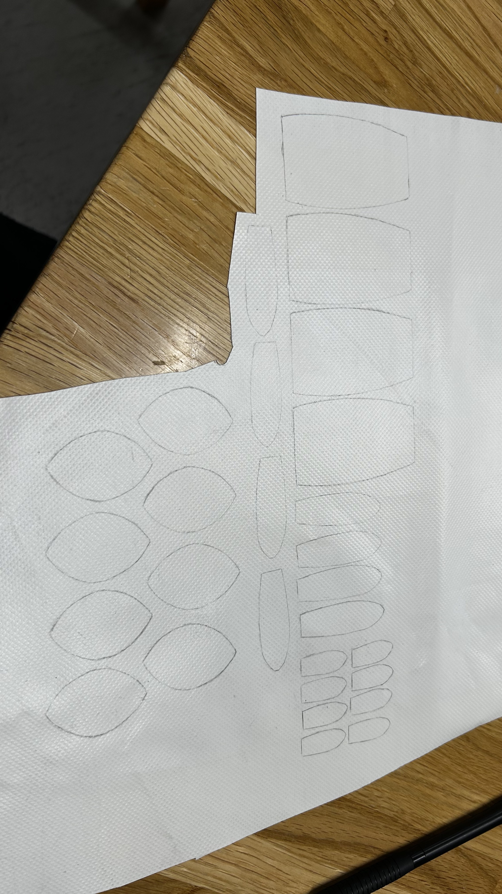

12月前半道用ゼミのまとめ
現在、改め元々提案していたフィンガー（指人形）を作る方針で現状動いている。
前回の報告では、フェレットで作成されたネズミの指人形をベースにそれをターポリンに置き換えて作成を開始した。と記したはずだ。
加えて、今月前半はウサギの指人形の製作も並行して制作を始めた。
今回はその進捗を下記に記す。
前回はターポリンの汚れがひどかったため時間をかけて落としてから制作を始めたため進捗としてはあまりにも遅かった。
そこから進展し、今月前半はターポリンを切り取りそこから縫い合わせる、ことを予定していた。
まずは下記に切り取ったターポリンの画像を載せておく。


そこから手縫い等で縫い合わせていく、はずだった。
「これ、予備とかあったほうが良くない？」
もう一人のメンバーと話している内にその結論へと着地し、

載っていないだけで多くのパーツ（うさぎとネズミ分）が型紙をトレースして書き出され。
写真を撮影し忘れただけであるが、めちゃめちゃ多くのパーツを切り取った。
普通のハサミで切り取ったのだが、かなりの数切ったのもあり親指の骨部分には跡がつくと共に痛みをかなり感じた。
次回は今度こそ、と言う気持ちの元。
縫い合わせていく作業が始まる、予定である。
上手くいくことを願って、とりあえず今月前半の報告は終わる。